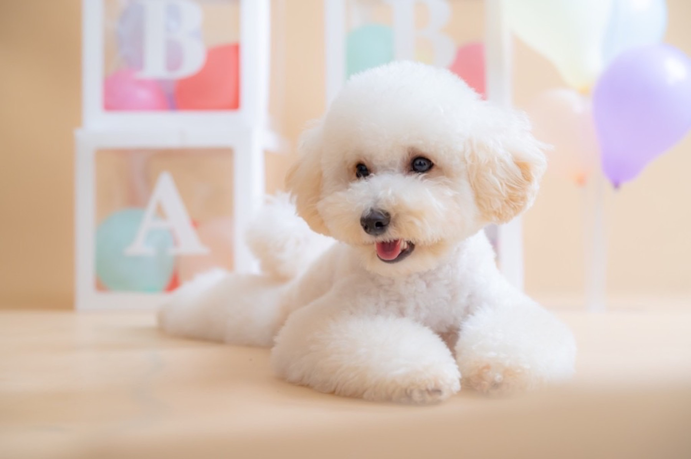
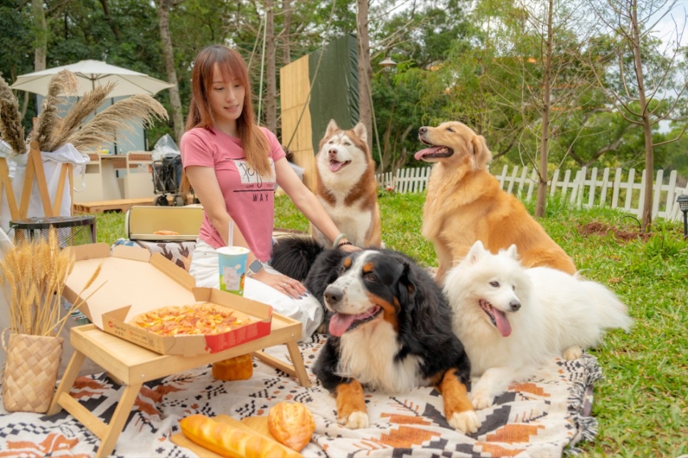

這不是一般制式的寵物攝影棚拍，而是一個讓毛孩真正放鬆的寵物攝影空間。
揪好森提供超過100坪的寵物攝影場地，擁有室內與戶外兩種拍攝模式，未來也將推出森林系寵物攝影場景。無論是狗狗攝影、貓咪攝影，或是主人與毛孩一起入鏡的寵物拍攝，我們都希望拍下的不只是畫面，而是你們之間最自然的互動與陪伴。
在這裡，毛孩不需要被壓抑，只需要自在地玩與生活，而我們負責留下最真實的瞬間。這也是許多客人願意推薦揪好森作為桃園寵物攝影首選的原因。
這不是一般制式的寵物攝影棚拍，而是一個讓毛孩真正放鬆的寵物攝影空間。
揪好森提供超過100坪的寵物攝影場地，擁有室內與戶外兩種拍攝模式，未來也將推出森林系寵物攝影場景。無論是狗狗攝影、貓咪攝影，或是主人與毛孩一起入鏡的寵物拍攝，我們都希望拍下的不只是畫面，而是你們之間最自然的互動與陪伴。
在這裡，毛孩不需要被壓抑，只需要自在地玩與生活，而我們負責留下最真實的瞬間。這也是許多客人願意推薦揪好森作為桃園寵物攝影首選的原因。
室內外兼具的寵物攝影體驗
室內寵物攝影棚主打乾淨、耐看的風格，以單色背景呈現毛孩最純粹的樣子。基本方案提供1種背景色，進階以上可拍攝2種背景色。

寵物攝影棚作品示意：素色背景狗狗攝影，畫面乾淨耐看。
戶外草地場景讓毛孩可以自由活動，搭配露營風佈置，拍出更生活感的寵物攝影畫面，也很適合家庭寵物寫真。

戶外寵物攝影作品示意：草地與露營氛圍，呈現自然互動。
未來將推出森林佈置場景，結合自然光與氛圍設計，打造更有故事感的寵物拍攝體驗，延伸森林系寵物攝影風格。

森林風寵物攝影場地示意：夜幕森林、露營燈串與森林系佈置，呈現森林系寵物攝影氛圍。
以下為寵物攝影與寵物拍攝的優惠方案，目前為期間限定價格。
優惠價 NT$3,800原價 NT$6,800
優惠價 NT$5,800原價 NT$8,800
優惠價 NT$8,800原價 NT$11,800
精修照片 NT$380 / 張
增加一人入鏡 NT$800
增加一隻寵物 NT$800
請提供拍攝日期、毛孩數量、是否入鏡與想要的場景，我們會協助安排最適合的寵物攝影方案。
點擊縮圖可查看大圖並左右切換